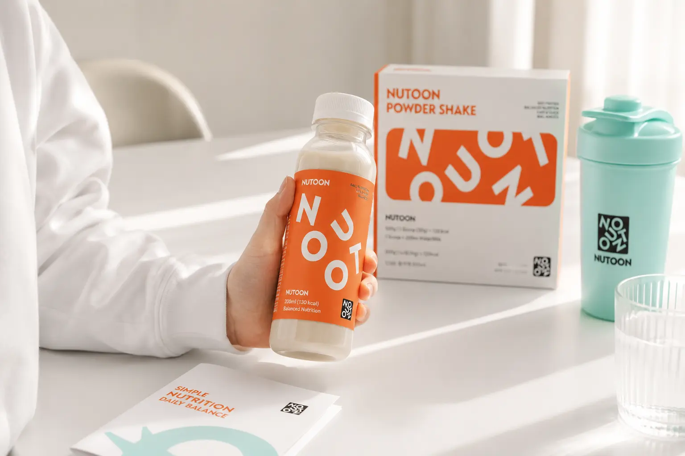
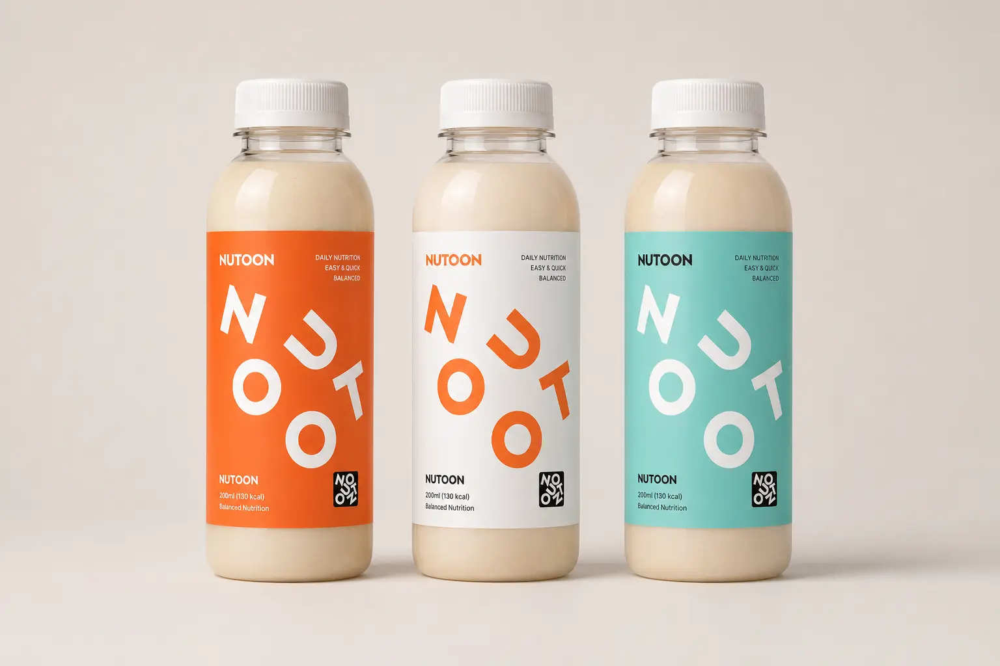
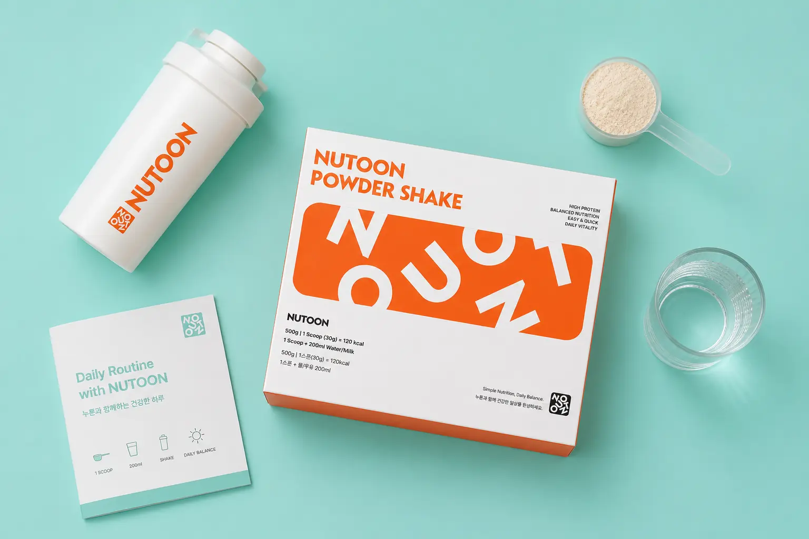
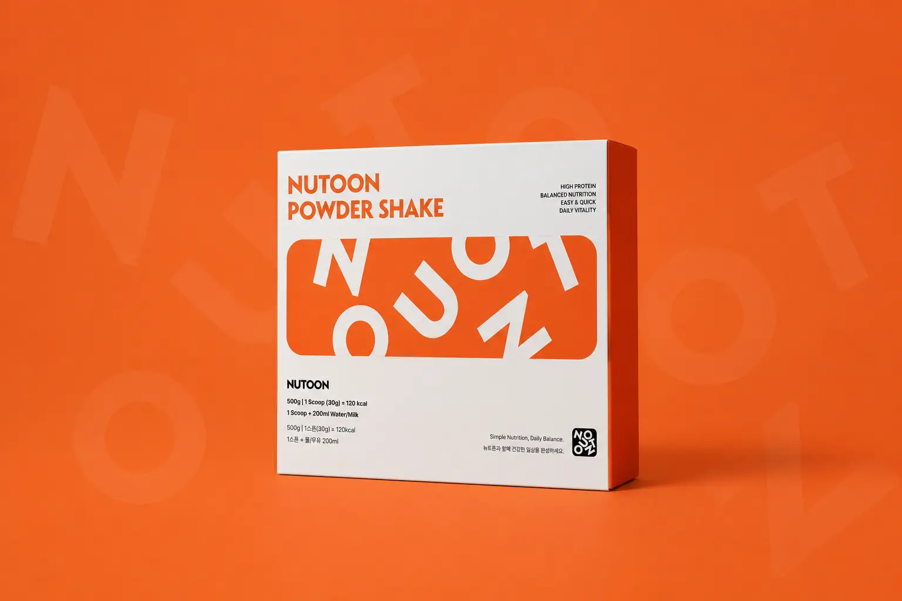
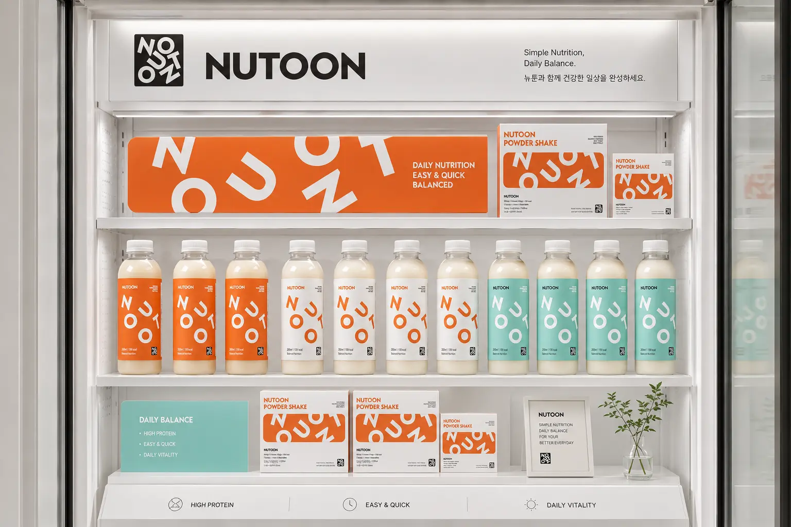
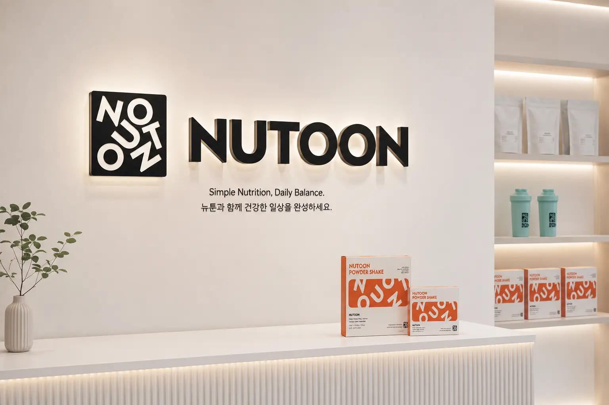
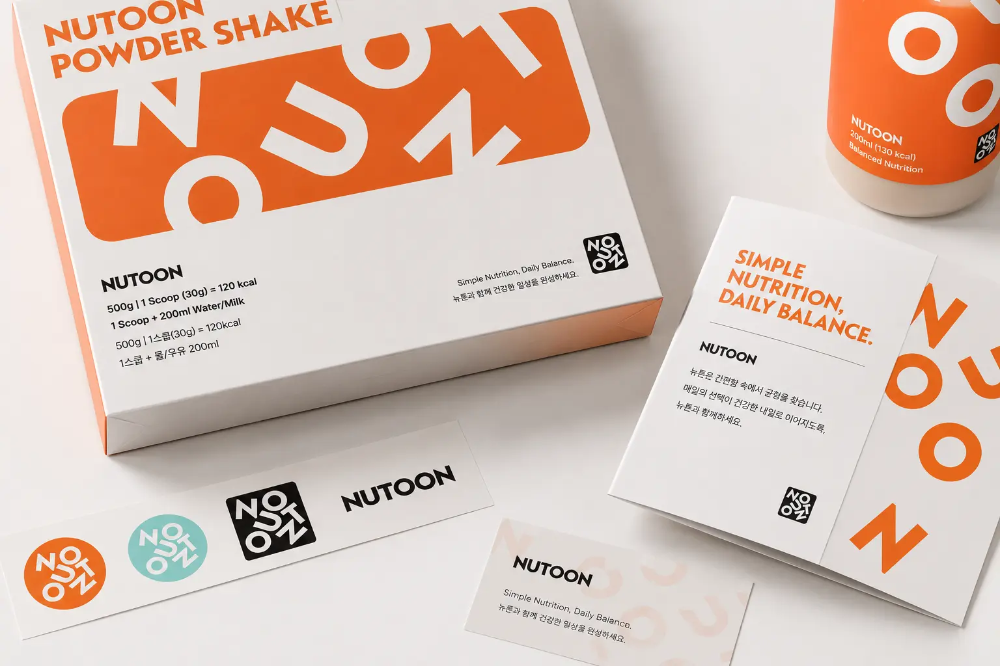
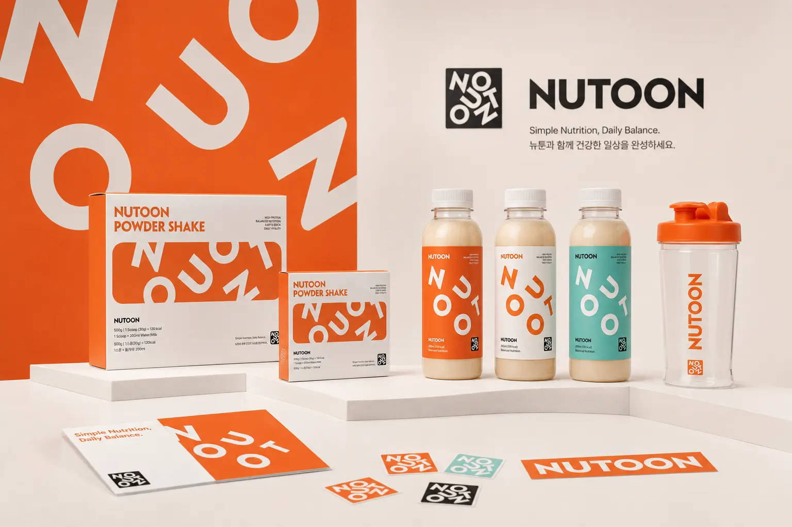

NUTOON의 목표는 아이의 성장과 건강관리를 어렵고 무겁게 느끼지 않도록 만드는 것이다. 영양 관리, 루틴 케어, 데이터 기반 성장 기록이라는 기능적 가치를 바탕으로 하되, 브랜드 표현은 친근하고 직관적으로 설계한다. 부모에게는 신뢰감을 주고, 아이에게는 재미있고 밝은 브랜드로 느껴지도록 하는 것이 핵심이다.
Portfolio / Brand Identity
NUTOON
NUTOON은 아이의 성장과 일상 루틴을 함께 관리하는 키즈 루틴 케어 브랜드이다. 브랜드명은 영양을 의미하는 ‘Nutrition’의 뉘앙스와 밝고 친근한 캐릭터적 인상을 함께 담고 있으며, 아이와 부모가 부담 없이 받아들일 수 있는 경쾌한 브랜드 이미지를 지향한다. 전체 디자인은 오렌지 컬러를 중심으로 밝고 활기찬 인상을 만들고, 굵고 둥근 타이포그래피와 회전된 그래픽 요소를 통해 아이의 성장, 움직임, 놀이성을 시각적으로 표현한다.
- Scope
- Brand Identity / Platform
- Studio
- BDLab
- Year
- 2026

NUTOON의 핵심 메시지는 “아이와 함께 자라는 루틴 케어”로 정리할 수 있다. 단순한 제품 판매 브랜드가 아니라, 아이의 하루와 성장 과정을 꾸준히 기록하고 관리하는 브랜드라는 방향성을 가진다. “Routine Care that Grows with Your Child.”와 “Daily Growth, Guided by Data.”라는 문구는 NUTOON이 성장 관리와 데이터 기반 케어를 함께 다루는 브랜드임을 보여준다.
NUTOON의 디자인은 활기, 성장, 놀이, 루틴을 중심으로 구성되어 있다. 오렌지 컬러는 아이의 에너지와 건강한 이미지를 전달하고, 민트 컬러는 부드럽고 깨끗한 케어 이미지를 보완한다. 로고와 심볼은 정적인 형태보다 움직임이 있는 그래픽으로 구성되어 있어, 아이들의 자유로운 활동성과 브랜드의 유연한 확장성을 함께 보여준다.






